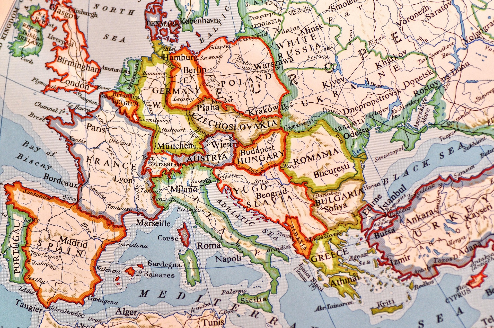

🫠Europaschule

🌠Europa – Ein Kontinent mit Geschichte
Europa ist ein Kontinent mit einer einzigartigen und bewegten Geschichte, die von kultureller Vielfalt, politischen Umbrüchen und gemeinsamen Entwicklungen geprägt ist. Von der griechischen Antike über das Römische Reich bis hin zur Aufklärung und den beiden Weltkriegen haben europäische Ereignisse und Ideen die Weltgeschichte nachhaltig beeinflusst. Heute steht Europa nicht nur für historisches Erbe, sondern auch für den Versuch, durch Zusammenarbeit, Verständigung und gemeinsame Werte wie Frieden, Demokratie und Menschenrechte eine gemeinsame Zukunft zu gestalten. Die Europäische Union ist Ausdruck dieses Strebens – ein Projekt, das aus der Geschichte gelernt hat und auf Dialog und Zusammenhalt setzt.
🧠Selbstverständnis
Zu unserem Selbstverständnis als Europaschule gehört in besonderer Weise die Vermittlung von Bildung mit europäischer Dimension, basierend auf den Ideen der Aufklärung und des Humanismus. Weltoffenheit, Toleranz und interkulturelle Verständigung sind hierbei leitende Werte.
Unser Schulleben soll geprägt sein durch ein respektvolles und verständnisvolles Miteinander aller am Erziehungsprozess beteiligten Personen und Gremien der Schulgemeinde. Wir wollen in einer Atmosphäre arbeiten, in der sich alle, die an diesem Prozess beteiligt sind, wohl fühlen, sich ihrer Verantwortung bewusst sind und sich aktiv einbringen.
Unsere Bildungs- und Erziehungsarbeit fördert die Schüler*innen in ihrer Persönlichkeitsentwicklung, ihren individuellen Möglichkeiten sowie ihren fachlichen und sozialen Kompetenzen so, dass sie den gesellschaftlichen Aufgaben der Gegenwart gerecht werden und Verantwortung für eine gemeinsame europäische Zukunft übernehmen können.
📠Bildungsidee und Bildungsauftrag
Es ist Aufgabe und Ziel des Unterrichts und fachgebundener sowie fachübergreifender Projekte, die Schüler*innen zur allgemeinen Studierfähigkeit zu führen und sie zu einer erfolgreichen beruflichen Entwicklung im zusammenwachsenden Europa zu qualifizieren. Der Entwicklung von Teamfähigkeit, Selbstständigkeit, Kreativität und Flexibilität wie auch der Bereitschaft zu lebenslangem Lernen ist das GREM verpflichtet.
🏘️ Das GREM im Stadtteil
Das GREM liegt randstädtisch zur Großstadt Moers. Insgesamt gibt es in Moers vier Gymnasien, drei Gesamtschulen mit gymnasialer Oberstufe und drei Berufskollegs mit unterschiedlichen Bildungsgängen, die allesamt zum Abitur führen.
Daher sehen wir uns in der Konkurrenz und gleichzeitig in der Partnerschaft mit den weiterführenden Schulen – auch zur direkt benachbarten Gesamtschule.
Die randstädtische Lage bedeutet für uns, dass sich das schulische Einzugsgebiet über die Stadtgrenzen von Moers hinaus bis in die benachbarten Kommunen Rheinberg, Kamp-Lintfort und Duisburg erstreckt. Unsere schulischen Angebote strahlen bis in diese genannten Nachbargemeinden. So kommt ein Teil unserer Schülerschaft als Fahrschüler*innen von außerhalb zu uns.
Das breite Angebot im Bereich der Arbeitsgemeinschaften im Ganztag, das wir in Zusammenarbeit mit unterschiedlichen Vereinen (z.B. dem Tennisclub) und Organisationen (z.B. der VHS) realisieren, gestaltet eine attraktive Schule. Kooperation mit Schlosstheater.
🌠Das GREM in der Region
Zwei weitere wichtige Punkte tragen seit Jahren zur Entwicklung besonderer Profile der Schule bei.
Einerseits ist es die Nähe zu den niederländischen Nachbarn, die uns bewog, nicht nur auf Austauschebene mit niederländischen Schulen zu kooperieren (Venlo, Deurne), sondern auch eine intensive Zusammenarbeit mit der Universität Fontys zu suchen. Aus diesem Gedanken entspringen auch der Europaschulgedanke, die Zusammenarbeit auf Erasmus plus - Ebene und das bilinguale Sprachenangebot.
Andererseits sind wir eine Schule in einer Region, die immer noch einem starken Strukturwandel unterzogen ist. Gerade der Moerser Norden war in der Vergangenheit jahrzehntelang stark durch den Bergbau geprägt, die Bevölkerungsstruktur blieb weitgehend erhalten, während die Industriestruktur sich wandelte. Aus diesem Grund suchen wir die Zusammenarbeit mit dem zdi (Zukunft durch Innovation) der Universität Duisburg-Essen und verstärkt mit der Universität Rhein-Waal in Kamp-Lintfort auf der MINT-Ebene. Zu nennen ist an dieser Stelle nicht nur das fab-lab (fabrication laboratory = offenes Labor; bedeutet hier: Schülerlabor mit besonderer Ausstattung im 3 D-Druck), sondern auch die Betreuung bei Wettbewerben und die Unterstützung in verschieden Bereichen des schulischen Lebens (z.B. bei der Durchführung des Berufetages).
Aus dem Genannten wird deutlich, dass das GREM stets ein attraktives Angebot für Schüler*innen der näheren und weiteren Umgebung schafft, um sich so als Gymnasium mit vielen Facetten innerhalb der Schullandschaft zu positionieren. Vor allem der sehr engagierten Lehrerschaft ist es zu verdanken, dass wir diese Vielfalt leben.
🇪🇺 Das GREM in Europa
Ein bedeutender Schwerpunkt der schulischen Arbeit am GREM ist die
🧩 Umsetzung des Europagedankens
Unsere Schüler*innen sollen jetzt und später die Werte der europäischen Aufklärung, wie z.B. die Gleichberechtigung der Geschlechter, verteidigen. Sie sollen zu einer eigenen Identität finden in der Begegnung mit anderen Kulturen.
Wir fördern Verständnis und Interesse an der Vielgestaltigkeit in Europa.
Wir sind ein bilinguales Gymnasium mit Partnersprache Englisch und realisieren Mehrsprachigkeit durch ein breites Sprachenangebot.
Wir nehmen an internationalen Projekten und Wettbewerben teil.
Wir pflegen Austauschmaßnahmen mit Partnerschulen in verschiedenen europäischen Ländern.
Wir arbeiten mit anderen Europaschulen zusammen.
Wir unterstützen die Schüler*innen bei ihrer beruflichen Orientierung im Hinblick auf den europäischen Arbeitsmarkt und ermöglichen Auslandspraktika.
Wir fördern international kompatible zusätzliche Abschlüsse durch unser bilinguales Zertifikat, Vorbereitungskurse und Prüfungen für die externen Sprachzertifikate ele.IT (Italienisch), CNaVT (Niederländisch) und DELF (Französisch) und sind eine der rund 100 Schulen in Europa, die das Exzellenzlabel „CertiLingua“ des Ministeriums für Schule und Bildung des Landes NRW vergeben können.
Struktur und Angebot der Schule werden möglichst weitgehend dem in Europa üblichen Standard angenähert (Beispiele: Ganztagsform, Bilingualität, länderübergreifende Kooperationen im Fach „Forschen und Entwickeln“, Erasmus-Programme).
🤠Schulvereinbarung
Die folgende Schulvereinbarung enthält Grundsätze des schulischen Miteinanders. Sie wird bei Aufnahme in die Schule zwischen Schüler*innen, Eltern und Lehrern getroffen.
📜 Grundvereinbarung
Wir Schüler*innen, Eltern und Lehrer*innen bilden zusammen mit dem nicht lehrenden Personal die Schulgemeinschaft des
🫠Gymnasium Rheinkamp Europaschule Moers.
Um eine erfolgreiche Erziehung und Wissensvermittlung zu gewährleisten, müssen Schule und Elternhaus zielgerichtet und aufeinander abgestimmt zusammenarbeiten.
Vor diesem Hintergrund treffen wir folgende Vereinbarung:
Wir verpflichten uns als Lehrer*innen
für die Belange aller Schüler*innen offen zu sein, Verständnis zu zeigen und ihnen im Rahmen unserer Möglichkeiten Hilfe anzubieten,
respektvoll und fair mit den Schülern umzugehen,
Schüler*innenleistungen vorurteilsfrei und nachvollziehbar zu bewerten,
im Bedarfsfall Gespräche mit den Eltern und Schüler*innen zu ermöglichen,
den Unterricht gut vorzubereiten,
uns verantwortlich für den Lernfortschritt der Schüler*innen zu fühlen.
Wir verpflichten uns als Schüler*innen
Regeln einzuhalten und Anordnungen der Lehrer*innen zu befolgen,
Lernzeitaufgaben und andere Aufgaben zuverlässig zu erledigen,
sämtliche Unterrichtsmaterialien in einem ordentlichen Zustand mitzubringen,
dem Unterricht aufmerksam zu folgen, aktiv mitzuarbeiten und den Unterricht nicht zu stören,
keine körperliche oder psychische Gewalt anzuwenden und zu dulden,
selbst aktiv für Pünktlichkeit, Ordnung und Sauberkeit zu sorgen,
das Eigentum anderer und das der Schule zu respektieren.
Wir verpflichten uns als Eltern und Erziehungsberechtigte,
Interesse für die schulische Entwicklung der Kinder zu zeigen und sie aktiv zu unterstützen,
für Lehrer*innen erreichbar zu sein, den Kontakt zur Schule zu pflegen und Gesprächsangebote der Schule (Sprechzeiten/Elternabende/etc.) wahrzunehmen,
bei Fehlverhalten der Kinder gemeinsam mit der Schule Lösungen zu finden,
in Erziehungsfragen mit der Schule zu kooperieren.
Aus den Grundvereinbarungen und den Leitzielen des Gymnasiums Rheinkamp ergibt sich für uns die Verpflichtung, diese Ziele in das tägliche Miteinander aller Beteiligten einfließen zu lassen. Auch wird die Fortentwicklung des Schulkonzepts dadurch wesentlich beeinflusst. Alle folgenden Ausführungen leben den Geist der genannten Grundvereinbarungen!